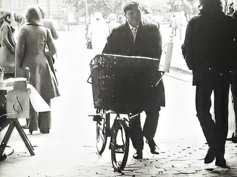
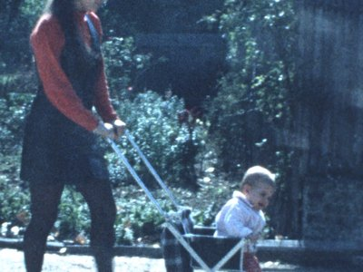
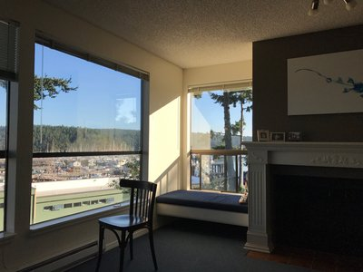
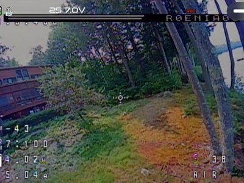

pog

Dublin 1974
Contact sheet photos from Dublin

Home Movies: Super8
Four reels converted in 2024

FHR Condo
Unit F212 at the Cannery Condo Village in Friday Harbor

Drone Footage
Bunker Road on Pleasant Lake, August 2025
Colin's Atari Commercials
Filmed January 1983